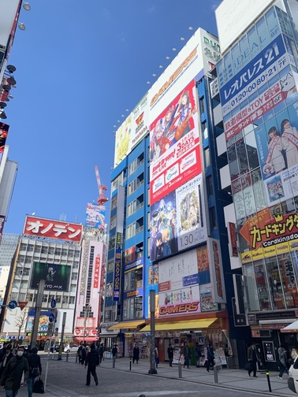

여행 셋째 날 (아키하바라)


약간 당황스러울 정도였는데 우리나라에는 이런 곳이 없어서 였던것 같다.
당황도 잠시 우리는 열심히 구경을 다녔다. 거리는 되게 넓어서 하루 종일 돌아다녀도 부족 할 것 같았고
역시 일본이다라는 생각이 들었다.
피규어도 각양각색이였는데 만화캐릭터들의 피규어가 가장 많았고 외국영화에 나오는 인물들도 있었다. 다양한 캐릭터들의 기념품들이 즐비하였다.
한 건물은 완전 옛날 레트로 장난감들이 모여 있는곴 이었는데 그곳에는 어떻게 보기에는 완전 촌스럽고 영화에서 보던 소품 같은 장난감들이 많았는데 가격표를 보면 깜짝 놀랄정도였다. 비싼건 300만원도 훌쩍 넘는 가격이였다.
즐비하였다.
물론 돌아다니면서 사고 싶은 것들이 되게 많았지만 대부분 가격이 매우 비쌋다 퀄리티가 좋은것들은 몇만엔이나 하기때문에 살 생각이 쏙 들어 갔고 눈으로 담아가기로 마음먹었다. 우리는 아이쇼핑을 실컷하고 돈키호테에가서 먹을거리를 잔뜩 사고 숙소로 돌아갔다.